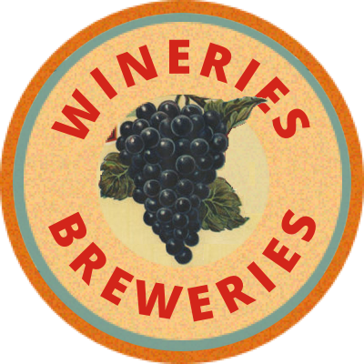
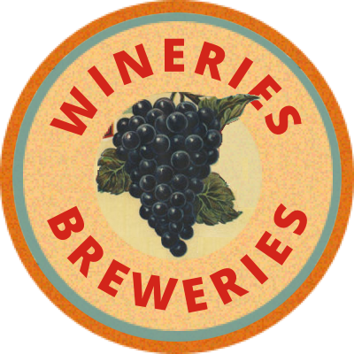

It started with a client who said: "I want to keep our current logo".
Accustomed to modern websites, I thought it wasn’t such a nice idea. I tried to get rid of its borders and make it match a modern website. In the process, I went for advice to my typography teacher. She looked at the logo and asked: “Do you know where it’s coming from?”. That’s is how my journey to the “Fruit Crane Retro” style began.
Retro images, hand-made textures, hand-written letters, card or circle forms, borders, overlapping, plants, rustic colors. All this together turned out pretty cool.
So instead of changing the logo, I created additional images to emphasize the style. As I'm not a graphic designer, I found some images on the internet and worked on them.

 

Type
College project
Role
Graphic Designer
Timeline
Sep–Dec 2017